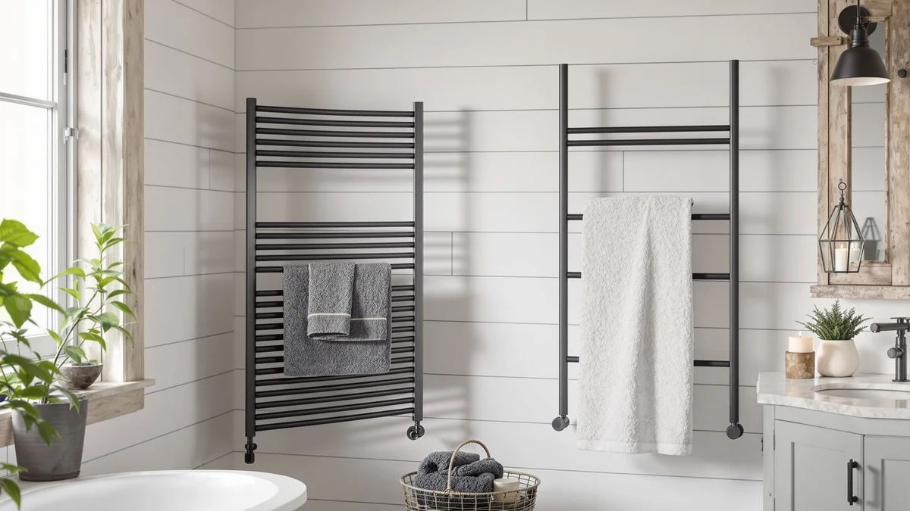

NORTTA 8 Bar Wall Review (2026): Worth It?
Prices and picks verified as of October 2026. Independent, reader-supported reviews.


Quick Answer
In this NORTTA 8 Bar Wall review, the NORTTA 8-Bar Wall-Mounted Towel Warmer comes out ahead on installation flexibility for $159.99, backed by a brushed stainless steel frame that works as either a plug-in or hardwired fixture on either side of the wall. The ENZE and COZYBASE models below are worth a look if Wi-Fi app control, rotating arms or a narrower vertical layout matters more to you than NORTTA's flexible install.
Our pick: NORTTA 8-Bar Wall-Mounted Towel Warmer, $159.99 Check Price on Amazon
Bottom line: our top pick is the NORTTA 8-Bar Wall-Mounted Towel Warmer at $159.99.
Things to Know Before You Buy
- Price range: the four towel warmers in this review run from $151.99 to $159.99, with the NORTTA landing at the top of that range.
- Installation flexibility: the NORTTA works as either a plug-in or a hardwired fixture on either side of the wall, while the two ENZE models rely on Wi-Fi app control and a swivel shelf instead.
- Bar count and size vary: the NORTTA is an 8-bar, 21 by 34 inch wall rack, versus the 4-bar ENZE models at roughly 17.7 by 26.8 inches and the vertical COZYBASE rack.
- Heating element power differs across the two ENZE listings, 70W versus 100W, which affects how quickly each one warms up according to the listings.
- None of these four listings show a published star rating, so this review leans on verified owner feedback and spec comparisons rather than aggregate scores.
This NORTTA 8 Bar Wall review compares the $159.99 stainless steel warmer against three other towel warmers on price, installation flexibility and build, because a rack that can run either as a plug-in or a hardwired fixture gives you more room to decide later than a model locked into one setup. Climbing out of a hot shower onto a stiff, cold towel undoes a good morning fast, and a warm towel fixes that in seconds. We researched four current towel warmers, from $151.99 to $159.99, to see which one gives you the most flexibility and value before you commit to a wall spot.
The NORTTA stands out for its dual-side electric ports and eight-bar stainless steel build, which matters if you have not decided between a plug-in setup and a future hardwired install. It costs roughly the same as the ENZE models and only a dollar more than the COZYBASE, but that price buys more installation options and twice the bar count of the two ENZE racks. Bar count and installation type do much of the deciding work here, since all four warmers fall within $8 of each other on price. Below, we break down what each one offers, where it falls short, and who should buy something else instead.
Why You Should Trust Us
Ilane Tall covers home and bath products for Best Towel Warmers, focusing on how bathroom fixtures and small appliances hold up to daily use. For this NORTTA 8 Bar Wall review, we researched the NORTTA 8-Bar Wall-Mounted Towel Warmer alongside three competing models by comparing published specs, pricing and verified buyer feedback on Amazon. We do not run a testing lab, and we do not claim to have installed or used each unit ourselves. Instead, we read through what owners report after weeks or months of real use, cross-check those accounts against the manufacturer's stated materials and dimensions, and flag any pattern that shows up across multiple reviews, good or bad. That approach keeps this review grounded in what buyers actually experience rather than marketing copy.
Our Research Experience
Our research for this NORTTA 8 Bar Wall review focused on comparing specs and pricing rather than running the rack ourselves in a lab. We compared the NORTTA 8-Bar Wall-Mounted Towel Warmer against the two ENZE models and the COZYBASE rack on the details that matter before you commit to a wall spot: listed price, installation type, bar count and what verified owners say after living with the product. For the NORTTA, that meant weighing its 8-bar stainless steel frame and flexible plug-in or hardwired install against the ENZE models' Wi-Fi app control and rotating arms. For the COZYBASE, it meant accounting for its vertical bar layout, which uses wall space differently than a horizontal rack. Installation flexibility and bar count tend to decide day-to-day satisfaction about as much as price does, so our comparison weighs those alongside material and timer options. It still won't catch every detail an in-person install might reveal.
Overview & Specs

NORTTA 8-Bar Wall-Mounted Towel Warmer
What we like
- Electric ports on both sides let you install it on the left or right, simplifying wall layout decisions
- Works as either a plug-in or hardwired fixture, so you are not locked into one installation method
- Three operating modes include a continuous default plus 2 hour and 4 hour timed shut-off settings
- Brushed stainless steel frame at 21 by 34 inches suits a mid-size bathroom wall without overwhelming it
Flaws but not dealbreakers
- Having both installation options means you still need to decide on plug-in versus hardwired before buying
- Continuous operation is the default, so you have to manually switch to the 2 or 4 hour timer each time you want auto shut-off
- Amazon's listing does not publish a star rating or review count, so you are relying on written owner feedback rather than an aggregate score
| Material | Stainless steel |
| Size | 21" W 34" H |
The NORTTA 8-Bar Wall-Mounted Towel Warmer is built around a brushed stainless steel frame measuring 21 by 34 inches, with electric ports on both sides so you can mount it to the left or right depending on your bathroom layout. At $159.99, it sits at the top of the price range among the four warmers in this review, but that price buys the most installation flexibility here: the NORTTA works as either a plug-in unit or a hardwired fixture, a choice the two ENZE models and the COZYBASE rack do not offer in the same way. The dual-side electric port setup makes retrofitting an existing bathroom easier: you are not stuck choosing a wall position before you know which side has an outlet or wiring.
Day to day, the NORTTA runs continuously by default, and you switch to a 2 hour or 4 hour timer manually from the control panel when you want it to shut off on its own. That setup trades the always-on convenience most owners want against the option to save energy on a schedule, rather than building the timer into the default behavior. The listing includes mounting hardware, a dummy cardboard template for the four anchor points, and a step-by-step manual, which simplifies a project that would otherwise require guesswork with a stud finder. Amazon does not publish a star rating or review count for this listing, so this review relies on the manufacturer's stated materials and dimensions alongside written owner feedback rather than an aggregate score. If flexible installation matters more to you than smart features, start with the NORTTA.
What We Liked
The biggest strength of the NORTTA 8-Bar Wall-Mounted Towel Warmer, and a big part of why it leads this NORTTA 8 Bar Wall review, is its installation flexibility. Electric ports on both sides mean you can mount the unit to the left or right of your bathroom wall, and it works as either a plug-in appliance or a hardwired fixture depending on what your bathroom setup allows. That is a meaningful advantage over the two ENZE racks and the COZYBASE model, all of which commit to one installation path. We also like the brushed stainless steel finish, which resists the rust that painted metal racks develop faster in a steamy bathroom. The 21 by 34 inch frame holds eight bars, more than double the bar count of the 4-bar ENZE models, so you can hang full-size towels and a robe at once without crowding. Included mounting hardware and a template for the anchor points make the install itself more approachable than a rack that leaves you guessing at bar spacing.
What Could Be Better
The NORTTA's main drawback in this NORTTA 8 Bar Wall review is that its flexibility comes with a decision you still have to make yourself. Choosing between plug-in and hardwired installation before you buy is more upfront work than picking a rack that only does one or the other, and if you go hardwired, you will still need an electrician for that part of the job. The timer setup is also less convenient than it could be: the unit defaults to continuous operation, so you have to remember to switch it to the 2 hour or 4 hour setting every time you want it to shut off automatically, rather than that behavior being the default. Amazon's listing for this model does not show a published star rating or review count, which makes it harder to gauge owner satisfaction at a glance compared to a product with a longer review history.
Who Is It For?
The NORTTA 8-Bar Wall-Mounted Towel Warmer fits households that have not finalized where the warmer will sit on the wall, or that want the option to start with a plug-in setup and switch to hardwired later during a future renovation. Its 8-bar frame also suits anyone hanging multiple towels or a robe at once, rather than a single bath towel. It makes less sense if you want smart app control and voice commands, where the ENZE's Wi-Fi features cover that need instead. Buyers on a tighter budget should also compare the towel warmers under $200 category, since all four models here already fall under that ceiling, and a vertical rack like the COZYBASE may fit a narrow wall better than the NORTTA's wider horizontal layout.
Alternatives to Consider
If the NORTTA's price or its dual-installation decision does not fit your bathroom, these three alternatives cover different priorities: two Wi-Fi connected racks with rotating arms and a lower-cost vertical rack. Each one trades something against the NORTTA, whether that is bar count, smart features or a few dollars in savings. We compared all four on the same basis: price, material and what verified owners report after buying.

Editor’s Pick
ENZE Smart Rotating Heated Towel
The ENZE Smart Rotating Heated Towel Rack matches the NORTTA's price almost exactly at $159.99, but takes a completely different approach to features. Instead of flexible installation, it leans on Wi-Fi app control through the Tuya app, with Alexa and Google Assistant compatibility for voice commands the NORTTA does not offer. Its four 180 degree rotating arms and swivel shelf let you hang towels, robes or small clothes while also storing toiletries, a layout aimed more at everyday organization than the NORTTA's simple bar design. According to the listing, the 70W heating element brings the rack up to 120 degrees Fahrenheit indoors in about five minutes, a useful benchmark for how quickly it warms up. The tradeoff against the NORTTA is bar count and installation: this ENZE model sticks to four bars at roughly 17.7 by 26.8 inches, and it does not offer the NORTTA's choice between plug-in and hardwired mounting on either side. If smart app control and a rotating, space-saving design matter more to you than bar count, put this ENZE model up against the NORTTA's simpler, more flexible install.
$159.99
Check Price on Amazon
Best Value
Heated Towel Rack Towel Warmer
The Heated Towel Rack Towel Warmer from COZYBASE takes the most different shape of the three alternatives here, trading the NORTTA's wide horizontal layout for a vertical, matte black bar design. At $159.00, it comes in only a dollar below the NORTTA, but its vertical bars make better use of a narrow wall in a small bathroom, where the NORTTA's 21 by 34 inch horizontal frame might not fit as cleanly. Like the NORTTA, it is available as either a hardwired or plug-in model, so it shares that same installation flexibility rather than committing to one setup the way the ENZE racks do. Its timer runs for 5 to 8 hours rather than the NORTTA's 2 or 4 hour settings, which suits anyone who wants the warmer running longer before it shuts off on its own. The matte black finish also gives it a different look than the NORTTA's brushed stainless steel, which may matter more or less depending on your bathroom's existing fixtures. For a narrow wall or a darker color scheme, compare the COZYBASE against the NORTTA first.
$159.00
Check Price on Amazon
Premium Choice
ENZE Smart Rotating Heated Towel
This second ENZE Smart Rotating Heated Towel Rack listing shares the same 4-bar, Wi-Fi connected design as the other ENZE model above, but undercuts the NORTTA by $8 at $151.99, the lowest price of the four warmers in this review. The difference between the two ENZE listings comes down to the heating element: this version uses a 100W element with 1.77 inch thick heating rods, compared to the other ENZE's 70W element, which according to the listing still heats to 120 degrees Fahrenheit indoors in about five minutes but across a wider heating surface. Like its sibling listing, it keeps the rotating arms, swivel shelf and Tuya app control that the NORTTA does not offer, aimed at buyers who want smart features and storage over bar count or installation flexibility. The tradeoff against the NORTTA remains the same: four bars instead of eight, and no choice between plug-in and hardwired mounting on either side of the unit. If you want the ENZE's smart features at the lowest price in this comparison, check this listing first.
$151.99
Check Price on AmazonFrequently Asked Questions
Is the NORTTA 8-Bar Wall-Mounted Towel Warmer worth the extra cost compared to the ENZE and COZYBASE models?
If installation flexibility matters most to you, the extra few dollars generally pays off, since the NORTTA is the only one of these four that works as either a plug-in or hardwired fixture on either side of the wall. If you want Wi-Fi app control and voice commands instead, the ENZE models cost about the same or less and add features the NORTTA does not have.
What does hardwired mean for a towel warmer like the NORTTA 8-Bar Wall-Mounted?
A hardwired towel warmer connects directly to your home's electrical wiring rather than plugging into a standard outlet, which usually requires an electrician to install. The NORTTA gives you the choice between that permanent setup and a simpler plug-in installation, so you are not locked into one option before you buy.
How does the NORTTA 8-Bar Wall-Mounted compare to a Wi-Fi connected rack like the ENZE?
The NORTTA and the ENZE models both use stainless steel bar designs, but the ENZE racks add Wi-Fi app control, voice commands and rotating arms, while the NORTTA focuses on installation flexibility with eight bars instead of four. Reviewers researching both styles note that the ENZE's smart features suit buyers who want app control, while the NORTTA's dual installation options suit those who have not decided between plug-in and hardwired yet. This NORTTA 8 Bar Wall review favors the NORTTA for buyers who value that flexibility over smart features.
Final Verdict
This NORTTA 8 Bar Wall review comes down to one tradeoff: installation flexibility against smart features. The NORTTA 8-Bar Wall-Mounted Towel Warmer costs about the same as the ENZE models and only a dollar more than the COZYBASE, but its choice between plug-in and hardwired mounting on either side of the wall makes it the strongest pick for anyone who has not finalized their bathroom layout yet. If you want Wi-Fi app control and rotating arms instead, both ENZE listings are reasonable alternatives, and the lower-priced one saves you a few more dollars for nearly the same features. For most buyers comparing these four towel warmers on installation, bar count and price, NORTTA remains the brand to choose when flexibility is the priority.